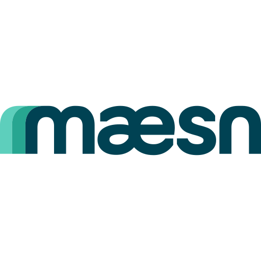

maesn is a Unified API platform that lets SaaS companies ship integrations with Odoo and 50+ other business tools in days instead of months. One integration with maesn gives your product access to a whole category of tools — accounting, HR, applicant tracking and project management — through a single, normalized data model.
This module adds a maesn menu entry to your Odoo instance that takes you directly to maesn, where you can explore available integrations and connect your Odoo data to the rest of your tool stack.
Visit www.maesn.com or check out the developer documentation.